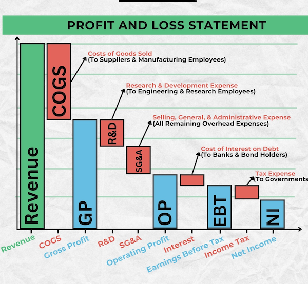

All businesses should produce some amount of revenue: the total amount of income generated by the sale of goods and services related to the primary operations of the business. Revenue taken in is like a big pool of cash that the company can do things with. One key part is paying for the cost of goods sold (COGS): the direct costs associated with producing the goods and services sold. For example, if you run a lemonade stand, what is the cost of the lemons, sugars, cups, etc. that you need in order to sell your product. Or, if you are a database company, this might include the cost to run servers or the underlying infrastructure that supports your service. This is money you must pay in order to function and sell a product.
A core related concept is gross margin: the difference between total revenue and the cost of goods sold. If you take in $100 in revenue and your COGS is $10, then your gross margin is $90. Typically, it makes sense to present this proportionally, as a percentage of revenue. That is, \[\begin{aligned} \text{Gross Margin} = \dfrac{Revenue - COGS}{Revenue} \times 100 \end{aligned}\]
Money left over after paying for COGS is called gross profit. This is then used to go ahead and pay for other expenses, like labor, sales/marketing, etc.
If you then take the gross profit and deduct these other expenses, like R&D, sales/marking, etc. then this gives you the operating margin i.e telling you how much is left over after cost of goods sold and cost to basically run the business. \[\begin{aligned} \text{Operating Margin} = \dfrac{Gross Profit - Operating Expenses}{Revenue} \times 100 \end{aligned}\]
